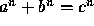
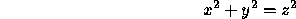
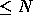

| Fermat vs. Pythagoras |
Computer generated and assisted proofs and verification occupy a small niche in the realm of Computer Science. The first proof of the four-color problem was completed with the assistance of a computer program and current efforts in verification have succeeded in verifying the translation of high-level code down to the chip level.
This problem deals with computing quantities relating to part of Fermat's Last Theorem: that there are no integer solutions of  for n > 2.
Given a positive integer N, you are to write a program that computes two quantities regarding the solution of

where x, y, and z are constrained to be positive integers
less than or equal to N. You
are to compute the number of triples (x,y,z) such that x
The input consists of a sequence of positive integers, one per line. Each integer in the input file will be less than or equal to 1,000,000. Input is terminated by end-of-file.
For each integer N in the input file print two integers separated by a space. The first integer is the number of relatively prime triples (such that each component of the triple is  ). The second number is the number of positive integers that are not part of any triple whose components are all . There should be one output line for each input line.
10 25 100
1 4 4 9 16 27